天使汉化组教程入门篇 —— Angel_Poon（天使汉化组）
http://emu.joyie.com/host/angelteam/Tutorials.asp
汉化基本概念
汉化游戏的步骤流程
1) 找出字符代码 , 并以文字档格式建立 "字符对照表".
2) 导出文本, 以方便翻译.
3) 造新的中文字模, 汇入 Rom 内, 取代原有的旧字模.
4) 配合新造的字模, 重定文本编码.
常用汉化字词简介
Asm Hack
可解作 "破解组合语言" ,组合语言 (或称作 "汇编") 是一种低阶的程式语言, 有些电脑或游戏主机, 因所用的处理器不同, 所使用的组合语言也不尽相同, 而且都是依照它所使用的处理器晶片而命名, 例如在 PC 用的叫 80x86, Apple II 用的叫 6502, 超任用的叫 65c816,而这种程式语言所用的指令码可直接存取及修改暂存器(Register), 旗标(Flag Register), 堆叠暂存器 (Stack Register), 记忆体及显示记忆体上(Vedio Ram) 的位址内容, 这种程式语言的优点就是, 编译(Compile)后的程式码执行速度最快, 但缺点是比中阶语言 (如 C )或高阶语言(如 VB) 都难学, 而且要除错也比较困难得多.....总之, 简单一点来说, Asm Hack 就是修改程式码.
Tile
这个字的原意是解作砖块或瓦, 但在这里是指在 Tile Layer Pro 中, 开启 Rom档后所见到的一格格方块, 如 (图片 1) 见到的, 一个个的方格的就是 Tile 了,有些 Tile 是字模, 有些却是图像用途的.
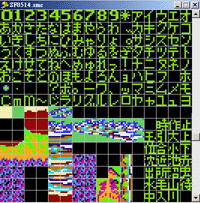
(图片 1)
文本
在游戏内出现的文字, 无论是对话内容, 菜单选项, 甚至是游戏标题画面中看到的文字, 都可称为文本.
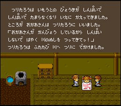
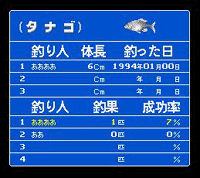
文本区
是指在 Rom 内存放文本的区域, 有些文本储存在 Rom 内不同的地方(位址), 这种储存方式可称为 "漂浮文本" , 而有些却是把文本全放在一个连续的区域内.
指针表
有些游戏Rom 内, 会把文本存放的位址, 以一个区域先记录起来, 游戏使用到该文本的时候, 只需在那个已定义的区域中找出那文本的位址出来就可以了, 这个记录区就称之为指针表, 当汉化游戏时, 如果能找出指针表, 那么在修改文本编码后, 及修改指针表内的文本位址, 就能使之改为指向所要显示的文本字串了.既然, 指针表是指向文本的起始位址, 那么, 怎知该文本的长度或在何处是该文本的结束呢? 有些本来是有固定的长度, 例如一些 Rpg 游戏的菜单里, 所用的文本长度是固定的, 如不足长度的就用空白来显示. 但有些些文本的结束是使用到一些特别的编码符号的, 例如: 文本内容是 abcde , 当 a=01 b=02 c=03 d=04 e=05 这些已知的编码, 那么, Rom 内的编码就就是 01 02 03 04 05 FF <--这个 FF 在这里可能就是结束符, 但不同游戏会会有自定的字符编码的, 有些字符编码的功能是结束该段文本, 有些是跳去下一行, 有些是回到同一行的开头, 有些是清除该行上面已显示的文字,各有功能的, 这些特别的字符编码, 可在找寻文本的字符编码时, 顺便把便把它们找出来, 会对其后的汉化过程有帮助的, 因为这些字符编码也就是文本显示方式的控制符号.
字模
首先说明一下文字是如何显示的, 以 PC 来说, 其实电脑内真正记录及处理的资料, 只有 0 和 1, 而不同的资料 (如 bmp, mp3, exe, txt, zip) , 只是人们通过程式, 把不同的资料解释及定义成何种的资料而已, 那么, 文字又是甚么形式的资料呢? 其实文字是以图像的方式, 通过 0 和 1 (发光或暗) 来显示,例如要显示一个 A 字, 以 1 是发光, 以 0 是暗来表达, 就是 00000000 00111100 01000010 01000010 01111110 01000010 01000010 01000010 , 这是二进位表示式, 把它垂直排列, 就是
00000000
00111100
01000010
01000010
01111110
01000010
01000010
01000010
(每一组使用了 8 个 bit(位元), 即是 1 个byte(位元组))(共使用了 8 个 byte)而以 16 进位表示式来显示, 就是 00 3C 42 42 7E 42 42 42 , 这 8 个 byte 的内容也就是这个 A 字的字模, 看到这里, 可能您会很奇怪, A 的 ASCII 码不是 65 (十进位) 吗? 只用一个 byte 的嘛! 为何会是 8 个 byte 的? 但请记着,ASCII (美国信息交换标准编码), 只是一种编码而已, 而不是字模, 就正如在汉化过程中, 找出字符 A 的文本编码是 65, 这也只是编码, 而不是字模. 在游戏 Rom 里的文字的编码, 是不会以 ASCII 为标准的, 所以就要自己找找出每一个字的编码是甚么, 也就是 "字符对照表" 了, 而字模, 也不会是只以 8 个 byte 为一个字模的, 那么, 在 Rom 内的字模是占用多少个 byte 呢? 这个可以在 Tlp (Tile Layer Pro) 中, 开启游戏 Rom, 找些字模来看看, 如果看到有些 Tile 好像是文字, 但又看不清楚, 可以在 Tlp 的功能表 View -> Format 里, 试用不同的格式来观看, 如 1 BPP , Game Boy (2 bpp) , Snes 3BPP , Snes (4 bpp), 除非是字模经已压缩, 否则就该能看到的了.补充说明一下, 每一个 bpp 都是占用 8 个 byte 的, 也就是说, 4 bpp 的字模,是使用 32 个 byte 的.
字库
字库就是一个存放字模的区域, 基本上可依它们的字体的大小而分为大字库及小字库, 例如用 Tlp 看到的字模是占用一个 Tile 的, 那就是小字库的字模模了, 反之, 占用四个 Tile 的, 就是大字库的字模了. 不同大小的字模在游戏游戏内的用途也不一样, 有些用作菜单字体, 有些是对话文本, 有些是状态列列的文字, 有些是标题画面里的字, 通常字模所占用的 Tile 不是 1 个就是 4 个, 但我也有见过用 2 个 Tile 放 3 个字模的, 这些字模在游戏内, 通常当作图像来显示, 所以不算是大字库或小字库的字模.
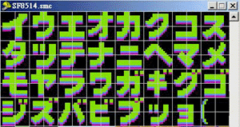
(大字库) 字模占用 4 个 Tile
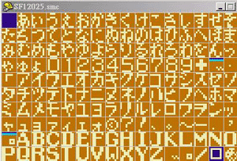
(小字库) 字模占用 1 个 Tile
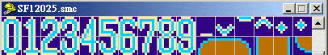
(其它例子-1) 占用 2 个 Tile 的 8x16 字模
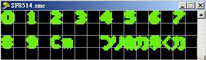
(其它例子-2) 有些字模很难介定所占用的 Tile 数
寻找字符代码
以下会以一些简单的实例, 来说明如何在游戏 Rom 中找寻日文字符代码, 及记录成 "字符对照表".
首先, 用模拟器开启游戏, 进入游戏中, 以其中一个有文字显示的画面来找字符代 码, 如 (图片 1) , 要找出这些日文字母的字符代码, 有以下两种方法:
1) 参照日文字表的字母排列方式, 自行定义所要找的日文字母编码, 使用工具Translhextion内的Value Scan Relative(相对搜寻) 功能就能找出该文本的位址及正确的日文字符编码, 然后就是多次修改那文本字串的编码值, 存档并再次进入游戏,看看画面的那句文本改为显示些甚么字,从而获得全部的字符编码. (要使用这方法, 先决条件是要知道日文字母的排列方式, 因为在 Rom中的日文字母字模, 通常都是依照一般的日文字母表的排列方式来顺序存放的.)
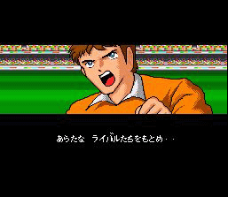
(图片 1)
2) 就是先用 Tlp (Tile Layer Pro) 看 Rom 内字模 Tile 的排列次序, 观察其排列方式及位置来定编码, 再用工具 Translhextion 内的 Value Scan Relative(相对搜寻) 功能来找出该文本的存放位址及那些日文字母的真正编码. (这种方法的好处是能用较短的时间来找出所有字的编码, 因为很多的情况下, 所找出来的编码, 根本就是 Rom 内字模 Tile 排列的次序, 当找出一两个后, 如果是和 Tlp 所看的排列位置相符合, 其它的就不用好像上面第一种方法那样, 要多次修改文本编码来获得其余字的编码)
以下会详细说明这两种方法的步骤:
参照日文字母表排列方式
以下是一些日文字母表的排列方式, 请先看看. . (这个图片中的只包含平假名中的清音, 浊音及半浊音)
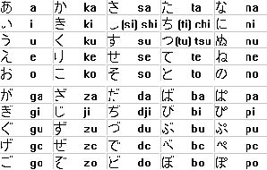
(图片 2)
而有些日文字表的排列却是以下的这种方式: (这里只列出平假名中的清音)
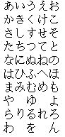
(图片 3)
那么该以哪一种排列方式来作准呢? 在游戏 Rom 内的日文字模虽然通常是依日文字表来排列的, 但依照 (图片2) 及 (图片 3) 的排列均有可能, 所以当你要用这个方法来找字符代码时, 可能用 (图片 2) 的次序找不到, 反而用 (图片 3) 的次序来找, 却能找到也说不定, 看你的运气了....以下的两个图, 是两个不同的游戏 Rom 在 Tlp 的字模 Tile 抓图, 用以印证上述说明的真实性 :
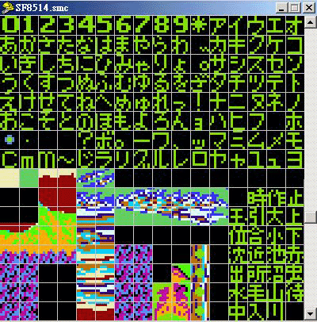
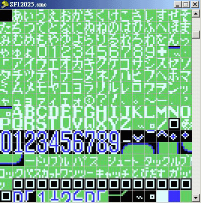
(图片 4)
好了, 该说回如何用这个方法来找字符代码了, 假设たちをもとめ是你要找的文本字串在(图片 1)中, 为何句中那么多字, 偏要选这段文字? 因为如果句子太短, 可能在用 (相对寻搜) 后, 找到出来有这句字串的位址不只一个, 而长度越大的话, 发生这种情况的机会也会较低, 而且, 这段中没有任何其它的片假名或浊音或半浊音日文字母, 如有的话, 虽然也能使用相对搜寻来跳值, 也能找到文本位址, 但会比较困难, 及可能找到不只一个位址, 所以使用跳值的次数越低就越好, 再假设你以 (图片 3) 的日文字表次序为参考, 暂定ぁ的编码是 01, 如此类推, 那么这句日文的字符编码可假定为 16 17 ?? 35 20 34 全是10进位, を要跳值是因为不知它之前是有没有任何其它字模, 以这些数字, 用 Translhextion 内的Value Scan Relative (相对搜寻) 功能就能找出这句文本的位址及该文本字串上的日文字的真正代码, 如(图片 5): 并得知这句的字符代码分别是 10 11 2D 23 14 22(16进位), 然后, 只需把这文本内容改为不同的编码值, 再存档, 及重新进入游戏内, 观察画面上的字串的显示文字是甚么, 就能得到其余的字符编码了.
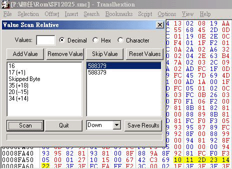
(图片 5)
参考 Tlp 内看到的字模排列位置
假设要找的字句还是 (图片 1) 中的 たちをもとめ, 先执行 Tlp 并开启游戏Rom , 找到字模区 (图片 4 的右面图) , 以 00 - FF 来假设是这个字模区内的所有字模及图案 Tile ( Tlp 的开启是预设为 16 x 16 个 Tile 显示的). 看字模的排列次序, 可假定这句的代码是 10 11 2D 23 14 22 (16进位),然后用 Translhextion内的 (相对搜寻) 功能直接以十六进位 (Hex) 来输入寻找, 因为字模的位置是看着 Tlp 里的字模排列来定的, 所以根本不用跳值, 输入的时候即使是已选用16 进位来输入, 但每一个值的输入后,画面会见到自动化为 10 进位来显示, 这可不必理会, 当输入完后, 找出的结果如 (图片 6) , (这个和上面的 (图片 5)是不同的, 请不要混淆), 至于其余的字符代码, 可照着刚刚找出的真正代码和Tlp 内的字模排列位置, 照抄下来就可以的了, 方便得很, 当所有的字模也抄下字符代码后, 做 成 "字符对照 表" 后, 才修改Rom 内的文本位址, 改为未有对应字模的代码, 存档并进入游戏测试看看, 就能找到那些余下代码的功能了 (文本字串控制符) . 这个方法本人觉得非常好用的, 因为用的时间短, 找到的字符编码多及快, 而且不单止可找连续性编码的文本, 更能配合相对搜寻的跳值功能找到游戏中菜单文字的字符代码, 也能找以背景 (BG) 来显示的字符编码值及位址 , 甚至是以 4 个 Tile 来显示的片假名或汉字 (大字库) 的字模编码也可以.
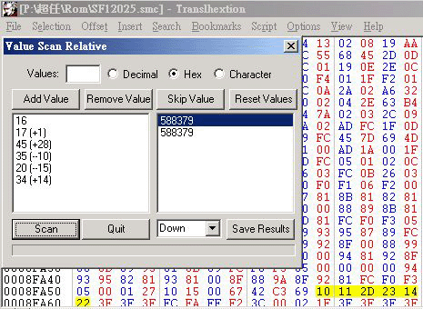
(图片 6)
有关字符对照表
其实, 字符对照表只是一个记录所找到的字符代码的文件档, 而这个文件档, 通常习惯上也名为 .tbl 的, 而不是 .txt.用途就是可以配合一些工具程式来把 Rom 内的文本导出来以方便翻译, 而这个字符对照表文件内的格式大致上如以下:
01=あ
02=いい
|
|
|
0E=そ
0F=たた
( 如此类推 ... )
如果有些字符是要使用双字节 (2 个 byte) 来显示的话, 字符对照表也可以如这样:
0001=あ
0002=い
|
|
|
000E=そ
000F=た
导出中文
当字符对照表做好了之后, 接着要做的就是要把游戏 Rom 内的文本 (dump) 导出来, 以方便翻译之用, 现在这种用途的工具有不只一种可供下载使用, 这里就以 Script-e 来说明一下:
首先, 为了要使 dump 出来来的文本, 能有空白, 跳下一行, 跳下一段 (跳两行) 的效果, 以 Script-e 来说, 在码表内要依这个程式的指定格式, 最基本的格式参数就是line break 及 Msg break 了
<line break> 跳下一行
例如: 跳去下一行的码是 FE
在码表内, 要写成:
FD=XX
line:FE
FF=XX
<Msg break> 跳下两行 (可作为分段之用)
如下一行的码是 FA
在码表内, 要写成:
F9=XX
msg:FA
FB=xx
"空白" 的话, 只需在=后面留一空白字符 (即是按 space 一下)
例如 "空白" 码是 00
在码表内, 要写成:
00= <--- (留空一格)
01=XX
02=XX
就可以了.
但在码表内不能同时定义两个 line:XX 及 msg:XX 的, 否则执行 Script-e 时会出Error. 执行 Script-e 时, 先会见到一个视窗, 然后就是顺着的输入以下资料给程式:请参看 (图片 2)
1) 字符对照表名称, 如果附加档名是 .Tbl 的, 可不用输入附加档名.
2) Rom 名称, 如果附加档名是 .nes 的, 可不用输入附加档名.
3) 文本输出档名称, 例如 temp.txt
4) 要 dump 出文本的起始位址, 输入的可以是十进位, 也可以是十六进位，如是十六进位在后面加上16进位的辨识符号 "h".
5) 然后输入文本长度, 也就是文本的起始位址及结束位址的差值, 用是十进位或十六进位都可以, 使用 10 进位时用 Windows 内的计算机工具程式, 把16进位的文本结束位址 - 文本起始位址 得出的答案, 再用它的转换功能转为 10 进位, 就可以了；十六进位在后面加辨识符 "h". 导出后的文本内容就会如 (图片 3) 的那样子了...
文本区域的起始位址及结束位址
看到这里, 有些朋友可能会有个疑问, 就是怎么知道文本区的起始位址及结束位址呢? 其实, 当你运用相对搜寻, 找字符代码的时候, 也实际上已找到文本区中的其中一个位置了, 所以呢, 要知道它的起始位址及结束位址也不太难的, 只是要花点时间, 用十六进位编辑程式 (例如 UltraEdit) 细心的观察其文本字串的结构 (也就是周围的 byte 的内容), 然后往上找, 应该会找到很多相同情况的字串 (例如字串的结尾都是以 FF 来结束的, 或是字串都是以几个固定内容的 byte 值来作为结束的), 直至看到一些不同情况的字串为止, 那就已找到文本区的起始位置了, 记下位址以用来使用文本导出工具, 那就可以的了, 而结束位置的寻找也是同一样的原理.
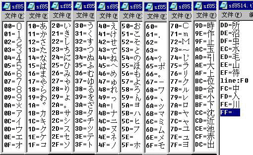
(图片 1)
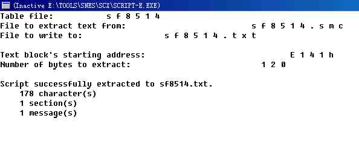
(图片 2)
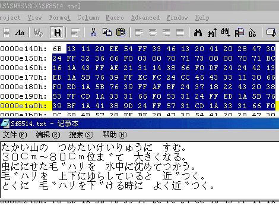
(图片 3)
造中文字模
当文本内容已导出及翻译后, 就能知道所需用到的是甚么汉字了, 这时候, 就要开始造字模及放回 Rom 里去, 以取代原有的字模. 而做字模的方法, 通常可用工具软件 CharEdit 或自制字模点阵图来导入字模.
使用 CharEdit 来导入字模
1) 用 "打开" 铵钮开启要导入字模的 Rom 档案
2) "行" 及 "列" 上输入在 Tlp 中要导入字模的直座标及横座标, 这个座标值是以Tile 为单位的.
3) "自选字体" "去除锯齿" 及 "阴影" 因应需要可选取使用.
4) 在 "其它" 的右面输入导入字模的起始位址, 而这个位址的数值只需在 Tlp 的底部那个 offset: 便看到了.
5) 在 "修改文字" 下方的文字填入要导入的文字就可以了. (它可一次过导入多个文字, 而不用逐个字来导入的.
用这个工具来导入字模, 优点是快, 而且可一次导入多个文字, 但缺点就是:
1) 做出来的字模只能是 2 bpp 的.
2) 如果 Rom 内的字模不是一个连续性的区域, 而是字模散乱分布的, 这时候, CharEdit 也不能发挥一次输入多个文字的功能.
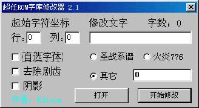
(图片 1)
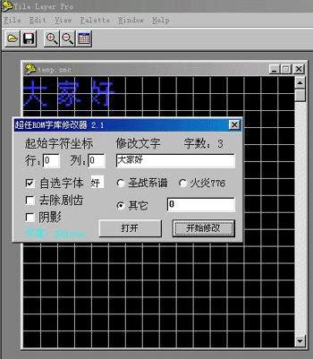
(图片 2)
自制字模点阵图来导入字模
1) 在 Windows 的小画家中, 开启一个新的档案, 然后用它的 "文字" 功能填入一些文字. (图片 3) 填入文字前, 先决定字型及字体大小, 填入的横向字数最好是八个, 以对应 Tlp 的格式 (横向的 Tile 数).
2) 在小画家的功能表 "影像" -> "属性" 中把图的像素改为刚好符合文字占用的像素, 以这个例子来说, 要做的 16x16 像素的字模, 所以 "宽度" 就要设定为 16x8 =128 了, 而 "高度" 在这里刚好也是八个字, 同样设定为 128. 如 (图片 4)
3) 依照原 Rom 字模的调色板, 决定需以 "黑底白字" 或 "白底黑字" 来显示图上的字. (图片 4) 及以 "单色点阵图" 这个格式来存档.
4) 执行 Tlp , 开启游戏 Rom, 并用功能表上的 "View" -> "Format" 调整好字模的显示格式.
5) 找到要导入字模的位置后, 用 Tlp 的 "Edit" -> "Import Bitmap" 功能把这个点阵图导入, 就可以了. (图片 5)
如果 Rom 内字模本身的排列不是连续性的区域, 而是散乱的, 这情况就不能直接把一个点阵图导入进去了, 而可先把这个点阵图导入另一个临时的 Rom 里, 这个临时 Rom 可以由原本的游戏 Rom 复制出来就可以了, 导入点阵图后, 才把这个临时 Rom内的字模复制及粘贴在游戏 Rom 里.
这个方法的优点是:
1) 可以先把全部要用的字模一次过做好.
2) 即使 Rom 内字模排列不是连续的, 也能轻易导入. (又不用看要导入的每个字模的位址)
3) 可造出不同 bpp 数的字模.
而缺点就只有是导入的工序较用 CharEdit 为多.
以下的这个例子是造 16x16 的字模
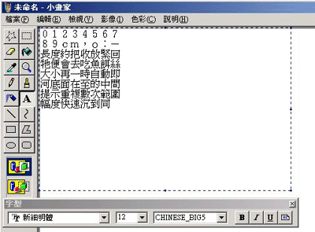
(图片 3)
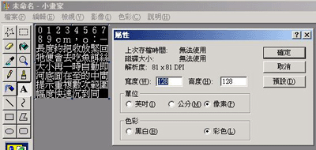
(图片 4)
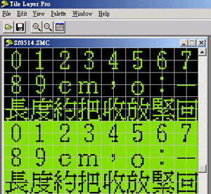
(图片 5)
替换文本编码
到了最后的阶段了, 当连字模也做好了, 就要把重新制订的文本放回 Rom 里去了,首先把做好的字模制定代码, 而那代码也就是先前找出来的那个字符对照表, 只不过在汇入中文字模去 Rom 时, 把字符对照表的字符代码由原本对应的字符, 改为对应导入的字模而已. 简单点说, 就是例如原本有个字符代码是 6E=の , 现在 "の" 的字模位置己由 "的" 这个字模所取代, 所以在字符对照表中, 就要改为 6E=的 , 那就可以了.
Script-i 这个工具软件, 可配合修改后的字符对照表及文本内容文件档, 来把已重新编码的中文文本存回 Rom 里, 用法其实跟 Script-e 差不多, 介面也是近乎一样的.都是先要把程式所需要的资料填入: 看参看 (图片 1)
| Table file: |
字符对照表名称. |
| Text file to read from: |
文本档 |
| File to write converted text to: |
要写入的 Rom 档名称 |
| Address to start inserting at: |
写入的起始位址 |
| OK to overwrite XX bytes? |
询问是否确定覆写 XX 个bytes? |
|
|
(那个 XX 的数值是程式从文本档侦测出来的) |
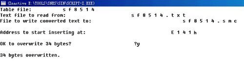
(图片 1)
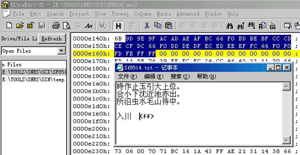
(图片 2) 导入编码后, 可用 UltraEdit 查看汇入的位址内容
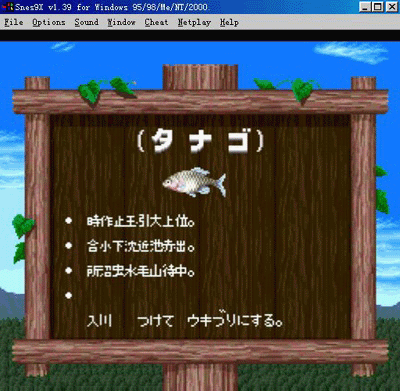
(图片 3) 在游戏内测试写入新编码后的效果
游戏Rom扩容
汉化中，字库容量不够是很常见的问题，这就需要对游戏 ROM 进行扩容。由于知识有限，在此只能详细介绍一下 SFC ROM 的扩容。在其它的汉化资料中曾经有过这个问题的介绍，但不够详细，所以才会有很多刚刚入门的朋友会感到扩容很复杂。其实 SFC ROM 的扩容非常简单，只是需要找到这个 ROM 的档头部分，改动其中的一个 byte ，而后在 ROM 结尾部分添加上足够数量的 0x00 来保证游戏容量的正确即可。但有例外，如果 ROM 原本的容量不是 2^n 即不是 2、4、8、16、32、64，而且扩容的目标又是最近而且大一些的 2^n，例如从 12 Mbit 到 16 Mbit、从 24 Mbit 到 32 Mbit，这样的情况是不需要修改档头的，可以直接扩充 ROM 大小。
找到档头
档头是在 ROM 中第一个 BANK 的结尾部分，由于 SFC ROM 有 HiROM 和 LoROM之分，所以 BANK 的容量也不同，HiROM 中一个 BANK 是 64K 而 LoROM 中一个 bank 的容量是 32K。所以这就需要进行简单的判断，笔者的经验就是看其中的内容。档头的前面 21 bytes 是 ROM 名称，但 ROM 名称几乎没有完全使用字母的情况，所以最明显的档头标志就是含有多个 0x20数字。有以下四种不同的档头存放位址，查看完全部四处位址，在其中必有一处有多个 0x20 数字，这里就是档头了。（附加档头是特殊格式的 SFC ROM 所具有，在 ROM 前端有512 bytes的档头，而且几乎全部是 0x00，也很容易看出。如 图 1、2）
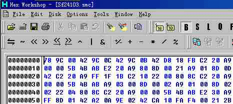
(图片 1) 没有附加档头
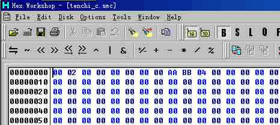
(图片 2) 有附加档头
0x7FC0 -- LoROM （如图 3）
0x81C0 -- LoROM 并且有附加档头 （如图 4）
0xFFC0 -- HiROM
0x101C0 -- HiROM 并且有附加档头 （如图 5）
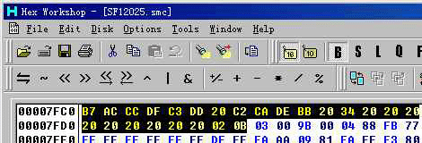
(图片 3)
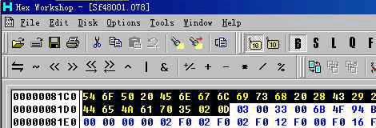
(图片 4)
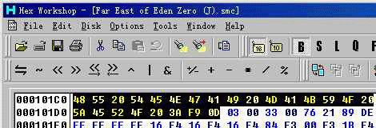
(图片 5)
修改容量
找到档头后我们就可以动手修改这个 SFC ROM 的容量了。档头前 21 bytes 是 ROM 名称；紧接着的 1 byte 是 ROM 配置，LoROM 是 0x30，HiROM 是 0x31；下一个 byte 是 ROM类型（不需要了解）；名称后的第三个 byte （即 0x???D7）就是用来记录 ROM 的容量了，容量的定义如下：
0x08 -- 2 Mbit
0x09 -- 4 Mbit
0x0A -- 8 Mbit
0x0B -- 16 Mbit
0x0C -- 32 Mbit
0x0D -- 64 Mbit
图 6、7 是钓鱼太郎的修改示范
(图片 6) 修改前为 0x0A 8M
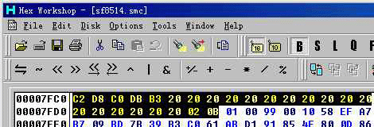
(图片 7) 修改后为 0x0B 16M
如果目标不是这些容量相同的大小，那么就按照最相近而且大一些的容量，例如 12 Mbit 选择 0x0B、24 Mbit 选择 0x0C。所以，如果是从12 Mbit 扩容到 16 Mbit 或从 24 Mbit 扩容到 32 Mbit 是不需要修改档头中这个 byte 的。（如图 8）
 (图片 8) 这个 12M 的 ROM 使用了 0x0B 16M 的容量
(图片 8) 这个 12M 的 ROM 使用了 0x0B 16M 的容量
添加缺少的 ROM 容量
档头的容量确定好之后，只要用 16 进位编辑软体在 ROM 的结尾处添加上扩容之后和扩容之前相差 bytes 数量的 0x00即可。例如使用 Hex Workshop 来实现，在 ROM 的末端右击出现菜单（如图 9），选择“Insert”，在数量（Numberof）中填写需要增加的容量（图 10 中为 8M 扩充至 16M，所以是 0x100000），在填充（Fill with the following) 中填写 0，点击确定即可。（图 11 是修改之后 ROM 的结尾处）
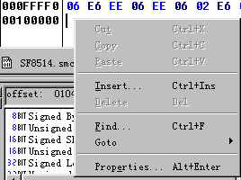
(图片 9)
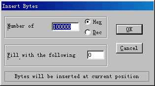
(图片 10)
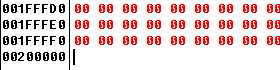
(图片 11)
修改好后可以用模拟器读取一次改好的 ROM ，看到提示的容量无误而且运行正常就是大功告成了 ^^